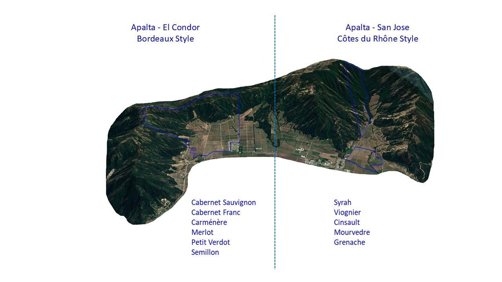

The Apalta Vineyard is located in the wine-producing region of the Colchagua Valley, 200km south-west of Santiago and 68km from the Pacific Ocean, between the Andes mountain range and the coastal cordillera. In 2018 the Apalta Valley was given its own DO in recognition of the amazing local conditions.
The valley is lodged between the Tinguiririca River and cordons of the Coastal Cordillera that end in a horseshoe shape. The east and west sides of the horseshoe delay the arrival of the sun in the morning and attenuate exposure in the evening. That position permits a good regulation of sunshine, allowing it to escape the excess heat that is well known in hot climates.
Thanks to the hills that surround the vineyard, the old vines in the lowest part of the field receive underground water for almost the whole growing season. El Condor was planted with Carmenère, Merlot, Cabernet Sauvignon, Petit Verdot, Cabernet Franc, Sémillon and Sauvignon Blanc between 1907 and 2023. Some of the oldest blocks, planted in 1907, have vines that were brought from France around the 1850s.
The Apalta San Jose Vineyard is in the same wine-producing region of the Colchagua Valley, 200km south-west of Santiago and 68km from the Pacific Ocean, sharing the horseshoe's regulation of sun and heat.
Where El Condor is Bordeaux at heart, San Jose is planted with the Rhône varietals: Syrah, Viognier, Cinsault, Mourvèdre and Grenache.
They are split between Bordeaux varietals and Rhône varietals, and it highlights the diversity that the Apalta DO offers to our winemakers.


Although both vineyards are only three miles apart,
Shop the Icon wines
they are home to quite different grape varieties.